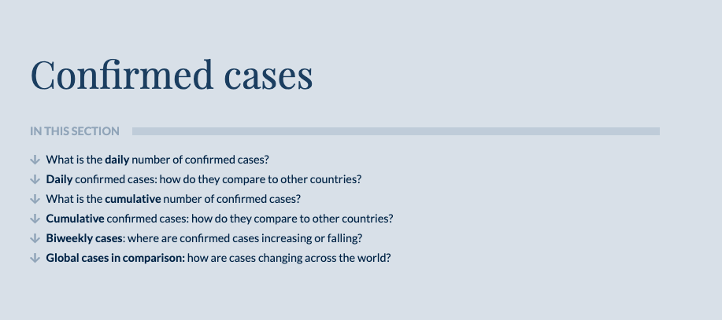
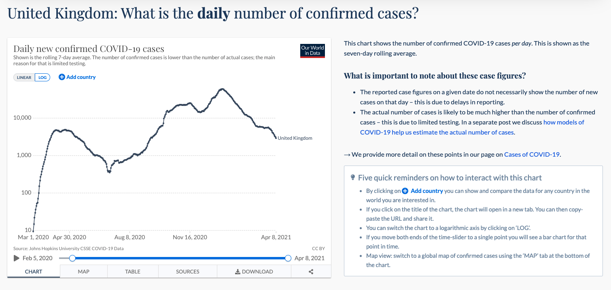
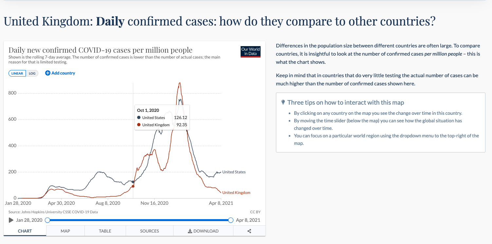
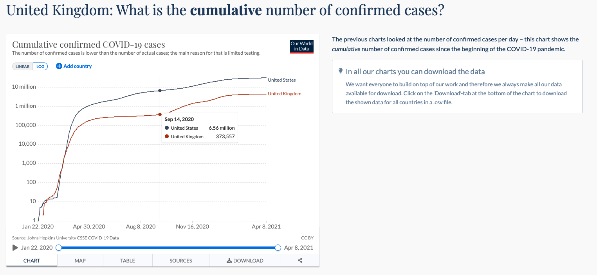
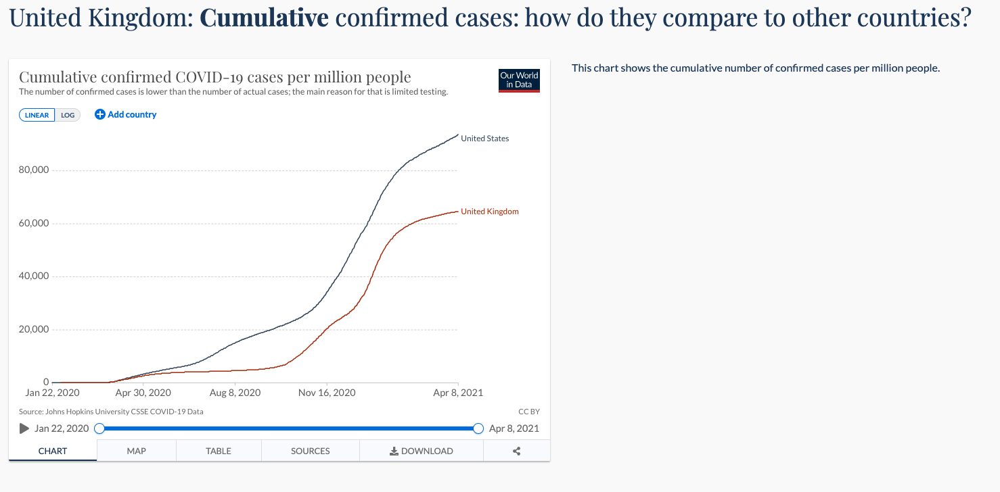
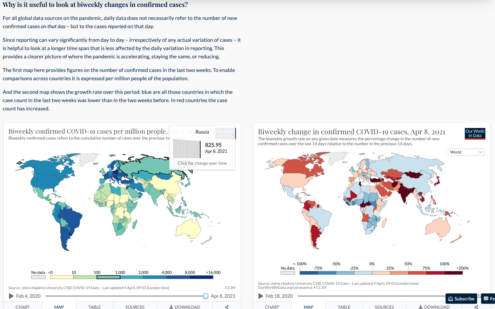
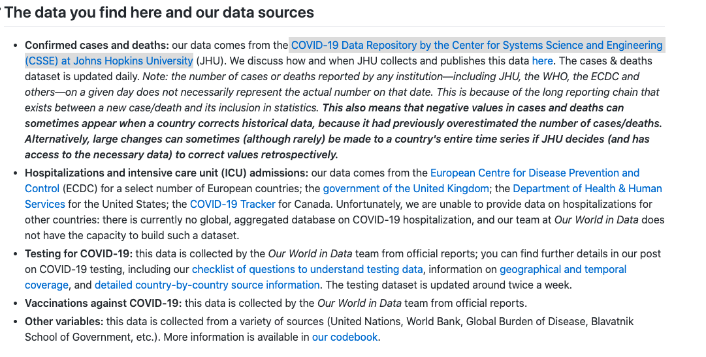
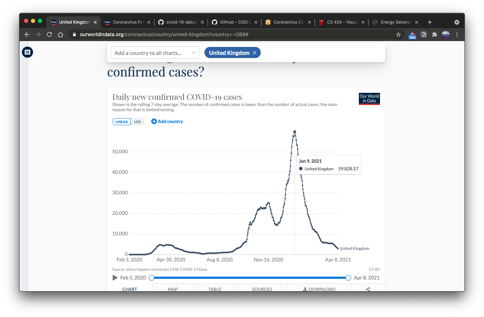
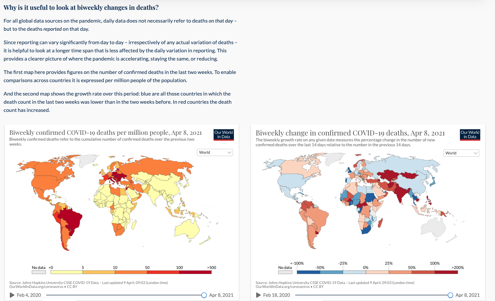
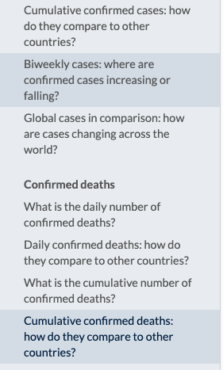

Student Presentation
A Deep Dive into an Interactive Visualization
United Kingdom COVID Data Exploration
Click here to go to the Video!
Introduction
Covid-19 has changed our lives as we know it; not just for this past year but also moving forward. This Webpage aims to record the Covid cases in a variety of manners
and allow the user to see the trends for the all of the countries in the world.
What is the Purpose
This website wants to explore the Covid-19 data in many different ways. It allows the user to see how the cases have risen and when the cases have gone higher as compared to other times. Not only can the user compare to other time periods in this past year, it also allows the user to compare the cases inn one place with the cases in another place, divided by country.What is in the Data
The webpage multiple ways of quantifying the Covid-19 data, as shown in the screenshot below. By exploring the graphs, a user can have a better understanding of whatever specific places they are exploring and how the outbreaks went in said spaces. Let's explore them on a case-by-case basis! Daily Confirmed Cases
It allows the user to explore them on a daily basis. It gives the user the ability to adjust what dates are being explored; they can either look at a specific date, a subset of dates, or even all of the dates in this pandemic. It also has a really nice log feature which normalizes the data and allows us to see where the trend is going. This is useful in exploring the spikes and seeing why they happened. Another nice feature is for the user to see the data in different ways. They have the option to see it as a line graph, map, or even a table. This really gives a good amount of flexibility and caters to different users and their preferences. Daily Cases Compared to other countries
This section has similar functionality compared with the previous one. However, one distinct difference is that the graph shows the number Per Million people. With this equalizer we can reliably compare the cases between two different countries, while taking into account their relative population size! Cumulative Confirmed Cases
This section has a graph that allows the user to see the cumulative number of cases for different countries. As previously, it allows you to compare with other countries as well as see the data in a variety of manners (line graph, table, maps). This section is useful for understanding the rise of the cases as opposed to other countries. If one of them did really well in controlling the virus, then they would be slowing down now and the total cases would not be increasing at the same rate as others. On the other hand, if a country was not doing so well, then we would see that in their continued meteoric rise of cases. Cumulative Cases Compared to other countries
This section has similar functionality compared with the previous one. However, one distinct difference is that the graph shows the number Per Million people. So then we can take into account the population of a specific country when looking at their total cases and whether they are tapering off or still increasing at a steady rate. Bi-Weekly Cases Confirmed
This section is very helpful on having a deeper understanding on where cases are increasing and where they are decreasing. As explained right before the actual graphs in the webpage, the daily cases are not necessarily accurate since they are just the reported cases on that specific date. It would be better to explore them on a tad bit larger interval so we can get a more accurate picture. Similar Sections on Related Topics
These set of sections are also available for the data on the number of deaths that have happened throughout the world in the different countries. The same features such as comparing with other countries, of using a log function, of seeing the information on the same scale to accurately compare, and the bi-weekly data are all there. The user is able to see this information in terms of the deaths, in terms of people vaccinated, in terms of testing for the virus, and in terms of the relation between deaths and cases over time. There is a great deal of information to go through and this website gives a nice holistic overview of it.
How was the Data collected
Their data for confirmed cases and deaths is from the COVID-19 Data Repository by the Center for Systems Science and Engineering (CSSE) at Johns Hopkins University. More information can be found here
Their data for testing and vaccinations were collected by their (Our World in Data) own team. More information can be found here. Here is more information on each of the different sections divided by the manner in which the data was collected: Who was this visualization made for
These visualizations were made for anybody that has been curious about the Covid-19 virus. It is a phenomenon that has not been seen at this level in a long time. Naturally, people are interested about how it occured and how the different places around the world fared because of it. It gives people insight about their own country as they can compare it to others that were in a similar situation. All in all, it gives a nice overview to the average human being on the Covid-19 pandemic.What questions do people want to ask
There are many questions that may want to ask regarding the Covid-19 virus.
- How many cumulative cases have their been on a country to country basis?
- How have the daily cases changed over time in X country? What about compared with Y country? (can contain all the countries)
- Are we able to grasp the various spikes and relate them to real world events in the different countries?
- What is the best way to judge how a country is currently doing in terms of the cases? Can I explore that from a bird's eye perspective?
- How have the deaths been on a country to country basis?
- How has the vaccine rollout been on a country to country basis?
- Is their a direct correlation between the adminstering of the vaccine and a decrease in cases?
How can they find the answers with this tool?
With this tool, people can explore the general information that has been mentioned before. If they would like to see the daily cases, cumulative cases, vaccine rollout, or the deaths caused by Covid-19, they have the ability to see all of that information in the different graphs that are offered. By using the functionality of the line graph, they can pinpoint specific dates where things started getting significantly worse and relate that with events in real life. For example, We see below that there were two spikes in the United Kingdom all in a span of couple months. These can possibly be attributed to the holiday season and people going out again since it had already been a couple months into the pandemic. See below for the visualization:  We note that right in early January there is a steep decline that is arguably still continuing. From this we can see that a mixture of more awareness in the general public coupled with the effects of the vaccine started to settle in.
This is just one example, but people can come to other conclusions with this data that is given to them.What Works
The features that the website claims to have work really well. The section about the cases on a bi-weekly basis is very helpful as most people would not noticed that daily cases might noot be the most accurate way of evaluating how a country handled the pandemic.What needs Improvement
There are specific instances where the best use of space is not utilized. For example:  Over here, there is a lot of extra space on the right that is not being utilized correctly. Also, the main attraction, the maps, are made to be very small. They should dynamically adjust based on the screen size but also ensure that they are always the biggest thing so the user is able to take advantage of them
 I feel like it may have also been beneficial if things were compacted and the user did not have to scroll as much. No doubt they have a nice sidebar to navigate between the different maps and pieces of information but what if a user wants to see two side-by-side? They would need to press one and then press the other in the sidebar. In general, the scrolling time of the user can be decreased considerably and could possibly be replaced by some more pull-down options
Another possible improvement would be to have better overview text right under the header. I do believe that their title is great and gives an accurate description of the information that has been provided, however right underneath it I believe they can elaborate a bit more on the data that is being presented. It is no doubt important to credit the creators but I believe that would go under a sub-text about the visualizations that are about to come below.